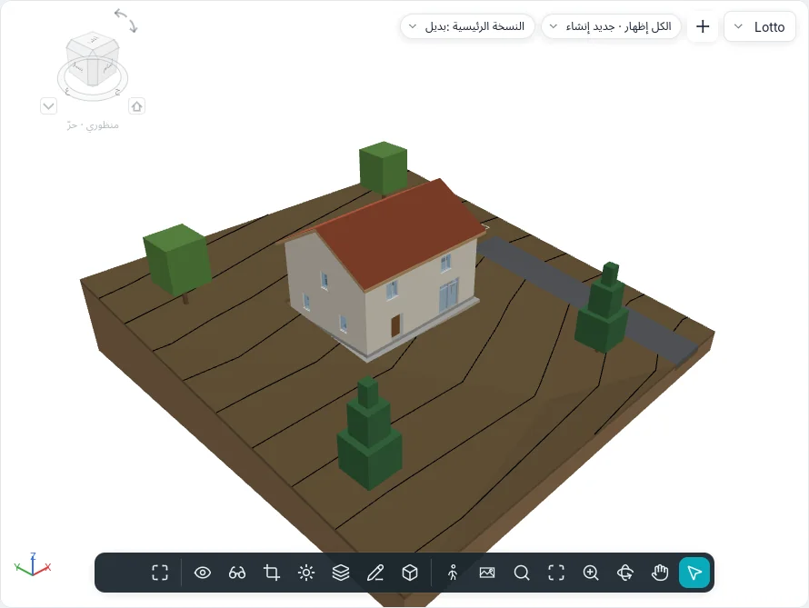

مخطط الموقع والأرض
تُنشأ الأرض التي يقوم عليها المبنى ورسومات قطعة الأرض المحيطة به بأدوات الكتل والموقع ▸ الموقع وتعديل الموقع. وتعمل في المساقط وفي مخطط الموقع؛ كما تُرسم الأرض ومنصة البناء في العروض ثلاثية الأبعاد، على مستوى منسوبها.

الأرض
الأرض جسم مصمت: محيط مرسوم (مع فتحات) على منسوب، تشكّله النقاط، وله طبقات نوعه وسماكته.
لأداة التضاريس ▾ طريقتان:
| الطريقة | طريقة العمل |
|---|---|
| إنشاء من رسم | وضع الرسم إنشاء حدود الأرض، مع مجموعة رسم المشتركة (الخطوط والمستطيل والمضلعات والدائرة والأقواس واختيار الخطوط). ارسم حلقة مغلقة؛ والحلقة داخلها فتحة. ويُنشئ إنهاء وضع التحرير أرضًا مستوية، أعلاها عند إزاحة الارتفاع عن المستوى |
| إنشاء من استيراد | مربع الحوار إضافة نقاط من الطبقات المحددة: طبقات ملف DWG أو DXF مستورد مع الارتفاعات (خطوط ونقاط ثلاثية الأبعاد) تشكّل نقاطها الأرض، أو إنشاء من ملف نقاط… (CSV أو TXT، وتُختار وحدته في التنسيق) |
يعطي ملف النقاط في كل سطر x وy وz أولًا؛ وتُتجاوز الأسماء والأعمدة الأخرى، ومن نقطتين لهما x وy نفساهما تبقى z الأعلى. وما زاد على حد إعدادات الموقع (20000 نقطة افتراضيًا، من 10000 إلى 50000) تُؤخذ منه عيّنة حتى الحد، وتقول رسالة كم نقطة بقيت.
تعديل الشكل
تعرض الأرض المحددة مجموعة تعديل الشكل:
| الأداة | طريقة العمل |
|---|---|
| إضافة نقطة | انقر داخل المحيط. في شريط الخيارات: مطلق (المنسوب المكتوب، من أساس المنسوب: المنسوب الحالي، نقطة أساس المشروع، نقطة المساحة، الأصل الداخلي) أو نسبةً إلى السطح (إزاحة فوق السطح أو تحته حيث تنقر)؛ وتأخذ التقاطات XYZ منسوب ركن أرضية أو طرف جدار، مضافًا إليه الإزاحة من الالتقاطات |
| تعديل العناصر الفرعية | انقر نقطة: اسحبها في المسقط، أو اكتب ارتفاعها فوق أعلى الأرض الأصلي |
| إضافة خط تقسيم | نقرتان: طيّة في السطح، مستقيمة بين منسوبيهما |
| إعادة تعيين الشكل | يزيل كل النقاط وكل خطوط التقسيم |
| تبسيط الأرض | يحتفظ بنسبة من النقاط (1000 نقطة بنسبة 70 % تصبح 700) |
يُثلَّث السطح عبر المحيط والنقاط؛ وتتبعه خطوط الكنتور فورًا.
النوع والطبقات وخطوط الكنتور
لنوع الأرض الإنشاء الخاص به في مربع الحوار نفسه طبقات النوع الخاص بالجدران والأرضيات: الطبقة المعلَّمة متغير تستوعب الشكل، فيبقى الأسفل مستويًا. ويسرد عرض الكنتور (عرض الكنتور في لوحة الأرض) مجموعات من خطوط الكنتور: البداية والنهاية والزيادة وقيمة واحدة أو قيم متعددة، ونمط الخط (رئيسية، ثانوية، خطوط مخفية، أضلاع التثليث) ومربع اختيار لإيقاف مجموعة. يرسم المشروع الجديد خطوط الكنتور الرئيسية كل 5 م والثانوية كل متر؛ ولا ترسم الأنواع طريق إسفلتي وممر حصى ورصيف أيًّا منها.
تُرسم خطوط الكنتور أيضًا على الأرض في العروض ثلاثية الأبعاد، بأنماط خطوطها، وتختفي حيث يقف المبنى أمامها.
في المقطع تُقطع الأرض بطبقاتها وبأنماط موادها. ويقرأ منسوب نقطة الموضوع على الأرض منسوبها هناك.
لـالرؤية والرسومات ▸ التضاريس الفئات الفرعية خطوط الكنتور الرئيسية وخطوط الكنتور الثانوية وخطوط مخفية وخطوط الطي ونقاط الحدود والنقاط الداخلية؛ والثلاث الأخيرة مطفأة ما لم تُشغَّل.
يجعل خيارات الموقع ▾ ▸ تظليل ناعم للأرض كل أرض ناعمة في الأنماط المظللة.
خيارات الموقع ▾ ▸ ثبات فراغ الحفر: الحفر الذي لا يكتمل يُعاد مع إزاحة حدوده بضعة مليمترات على x أو y؛ ويذكر حفر عدد الحفريات التي أُزيحت.
تعديل الأرض
| الأداة | طريقة العمل |
|---|---|
| منطقة فرعية | ارسم حلقة على الأرض المحددة (أو انقر أرضًا أولًا). يعطي النوع الخاص بها مادتها؛ وترفعها إزاحة المنطقة الفرعية (حافة رصيف) أو تُغرقها في الأرض المضيفة (مع حجم الحفر الخاص بها) |
| تقسيم الأرض | انقر الأرض، ثم ارسم حلقة مغلقة داخلها أو خطوطًا مفتوحة من حافة إلى حافة. والمنطقة الفرعية التي لا يستطيع التقسيم الاحتفاظ بها تطلب حذف المثيلات |
| دمج الأراضي | انقر الأرض الرئيسية، ثم الثانية: يجب أن تشتركا في حافة أو تتداخلا. ويكون إزالة النقاط على الحواف المشتركة مفعّلًا افتراضيًا |
| حفر / إزالة الحفر | والأرض محددة، انقر أرضية أو سقفًا أو منصة بناء أو أرضًا أخرى تخترقها. ويسرد حجم الحفر الفردي كل قطع |
| تسوية الأرض | يسأل تحرير المنطقة المسواة عن نسخة مطابقة أو عن نقاط المحيط فقط؛ انقر أرضًا من مرحلة سابقة. تُهدم في المرحلة الحالية، وتُفتح نسختها، الجديدة، في تعديل الشكل. وتعرض النسخة الحفر والردم وصافي الحفر/الردم |
يسرد جدول الأراضي الحفر والردم، مع مجموع إجمالي.
منصة البناء
ترسم منصة البناء حلقة مغلقة فوق أرض (إنشاء حدود المنصة، مع اختيار الجدران وسهم الميل). أعلاها عند إزاحة الارتفاع عن المستوى؛ وتُحفر الأرض تحتها أو تُردم حتى وجهها السفلي. ولنوعها إنشاء من الطبقات ونمط التعبئة لمستوى التفاصيل المنخفض.
عناصر الموقع ومواقف السيارات
يُدرج عنصر الموقع الأشجار والشجيرات والمقاعد وأعمدة الإنارة وصنابير الحريق، واحدًا مع كل نقرة (مفتاح المسافة للتدوير)؛ ويُدرج موقف سيارات أماكن الوقوف (90° و60° و45° وموازية ولذوي الاحتياجات الخاصة). ويقوم كلاهما على الأرض أو المنطقة الفرعية تحت النقرة ويتبعها حين تتغير. وينقلها اختيار مضيف جديد إلى أرض أخرى أو منطقة فرعية أخرى؛ ويصنع منها تكرار متسلسل صفوفًا.
حدود الملكية
يسأل حدود الملكية عن طريقة الإنشاء:
- إنشاء بالرسم: خطوط وضع الرسم؛ وتنبّه الحلقة المفتوحة إلى أن مساحتها لا يمكن حسابها (أنهِ مرة أخرى لإبقائها مفتوحة)؛
- إنشاء بإدخال المسافات والاتجاهات: جدول حدود الملكية، صف لكل مقطع فيه المسافة والاتجاه (مثل N 45°00'00" E) والنوع (خط أو قوس) ونصف القطر ويسار/يمين؛ وإدراج وحذف ولأعلى ولأسفل وإغلاق الذي يضيف مقطع العودة إلى البداية. وتتبع المقاطع الشمال الحقيقي.
تعرض حدود الملكية المحددة تحرير الجدول. ويضبط خيارات الموقع ▾ ▸ بيانات حد الملكية عرض الزاوية (اتجاه أو درجات) والوحدات. وتظهر حدود الملكية افتراضيًا في مخططات الموقع والعروض ثلاثية الأبعاد؛ ويسرد جدول حدود الملكية اسمها ومساحتها.
تسميات خطوط الكنتور
تسميات خطوط الكنتور: انقر بداية خط يعبر خطوط الكنتور ونهايته؛ فيعرض كل خط كنتور يقطعه منسوبه، مدوَّرًا ليُقرأ من شمال المشروع. ويحدد نوع التسمية النص وما إذا كانت الخطوط الرئيسية وحدها تُسمّى.
مخطط الموقع
لكل مشروع جديد مخطط الموقع؛ وينشئ العروض ▸ مسقط ▾ ▸ مخطط الموقع مخططًا آخر للمنسوب النشط: 1:200، مقطوعًا فوق المبنى حتى 10 م تحت المنسوب، موجّهًا إلى الشمال الحقيقي. ويعيده الاتجاه في خصائصه إلى شمال المشروع.
إعدادات الموقع
يحوي خيارات الموقع ▾ ▸ إعدادات الموقع خطوط الكنتور الخاصة بالمشروع (لأنواع الأرض التي لا تحدد خطوطها الخاصة)، ومادة المقطع وعمق التظليل لأنواع الأرض التي بلا طبقات، وبيانات حد الملكية، وأقصى عدد من النقاط يحتفظ به الاستيراد.
ليس بعد
تأتي أرض من وجه وربط الطبوغرافيا والسياق المحيط في مرحلة لاحقة.